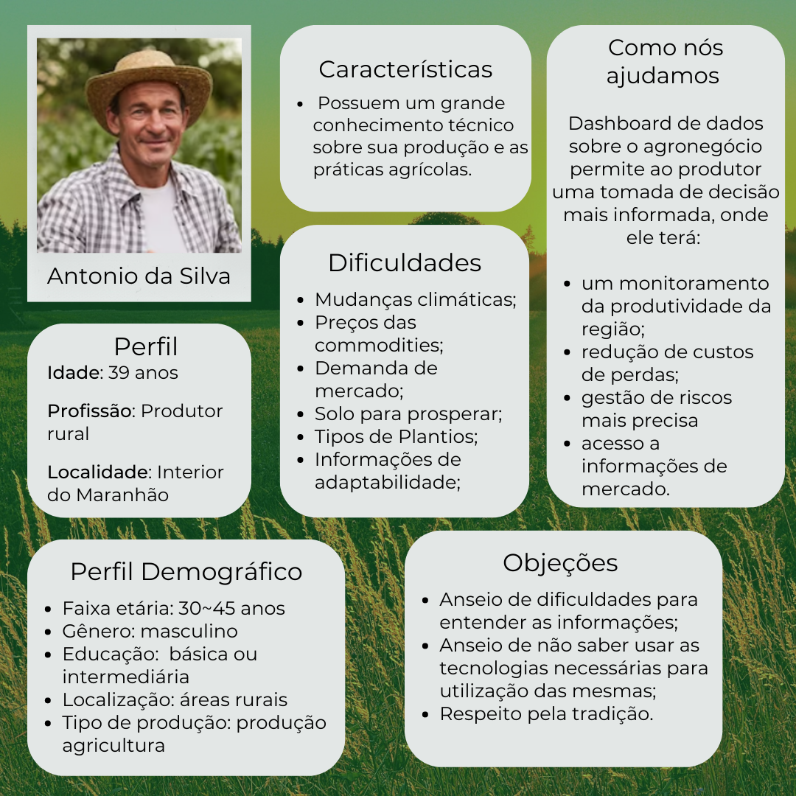
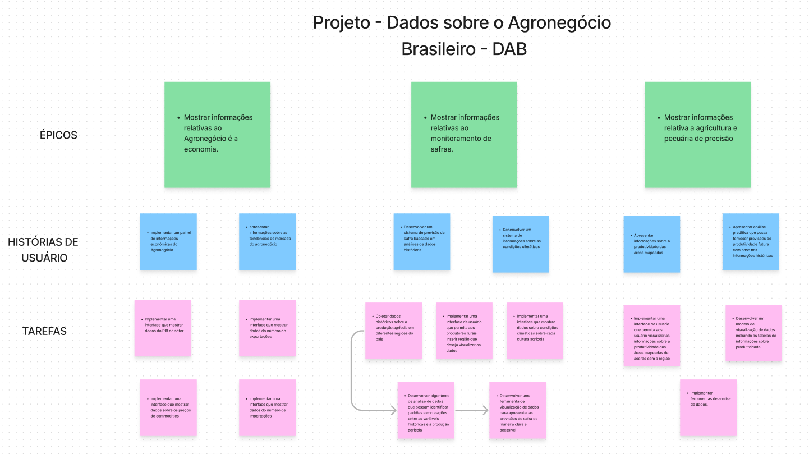
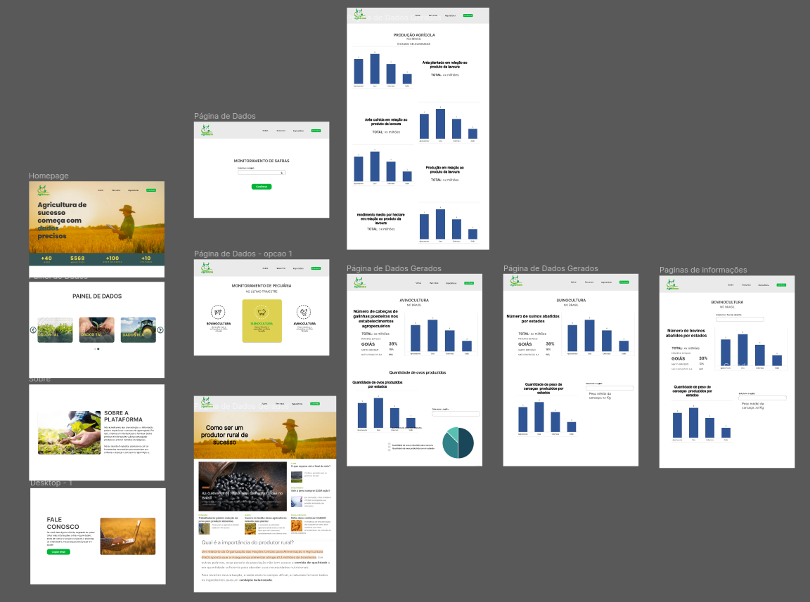
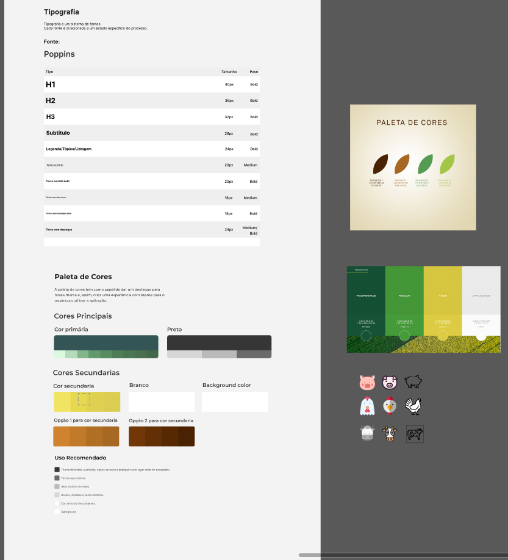

PERSONA
Nossa persona é uma representação fictícia de um cliente ideal que possui características e necessidades semelhantes. É uma técnica usada no marketing e no desenvolvimento de produtos para compreender melhor o público-alvo. Ao criar uma persona, é importante considerar informações demográficas, comportamentais, objetivos, desafios e motivações do cliente em potencial.

BACKLOG
Nosso backlog é uma lista organizada de tarefas, funcionalidades e requisitos que precisam ser realizados para atingir os objetivos do projeto. Ele é utilizado para registrar e priorizar as demandas de trabalho, garantindo que as equipes estejam alinhadas em relação ao que precisa ser feito. Clique para acessa nosso Backlog.

PROTÓTIPO
Nosso protótipo de alta fidelidade é uma representação visual e interativa de um produto ou interface, que se assemelha de forma bastante precisa ao produto final. Ele é usado para validar conceitos, testar a usabilidade e obter feedback dos usuários antes do desenvolvimento completo. Clique para acessa nosso Protótipo.

IDENTIDADE VISUAL
Nossa A identidade visual é o conjunto de elementos visuais que representam a marca e transmitem sua personalidade e valores por meio do design. Ela inclui elementos como logotipo, paleta de cores, tipografia, ícones, ilustrações e outros elementos gráficos. Clique para acessa nossa Identidade Visual.
